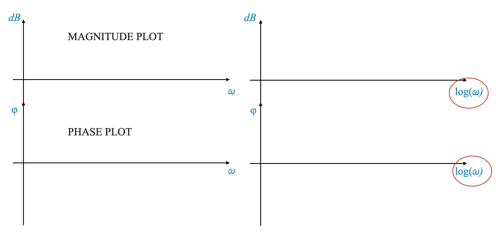
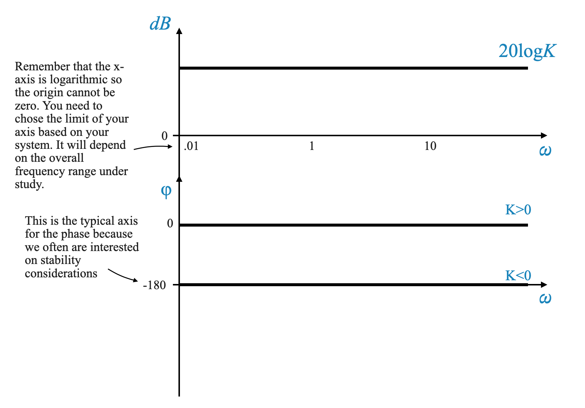
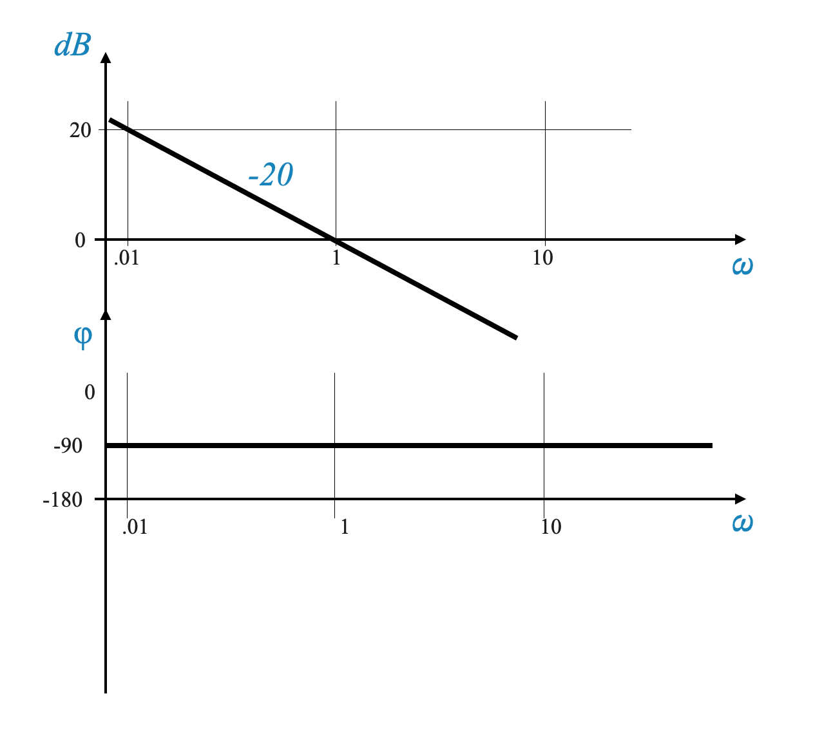
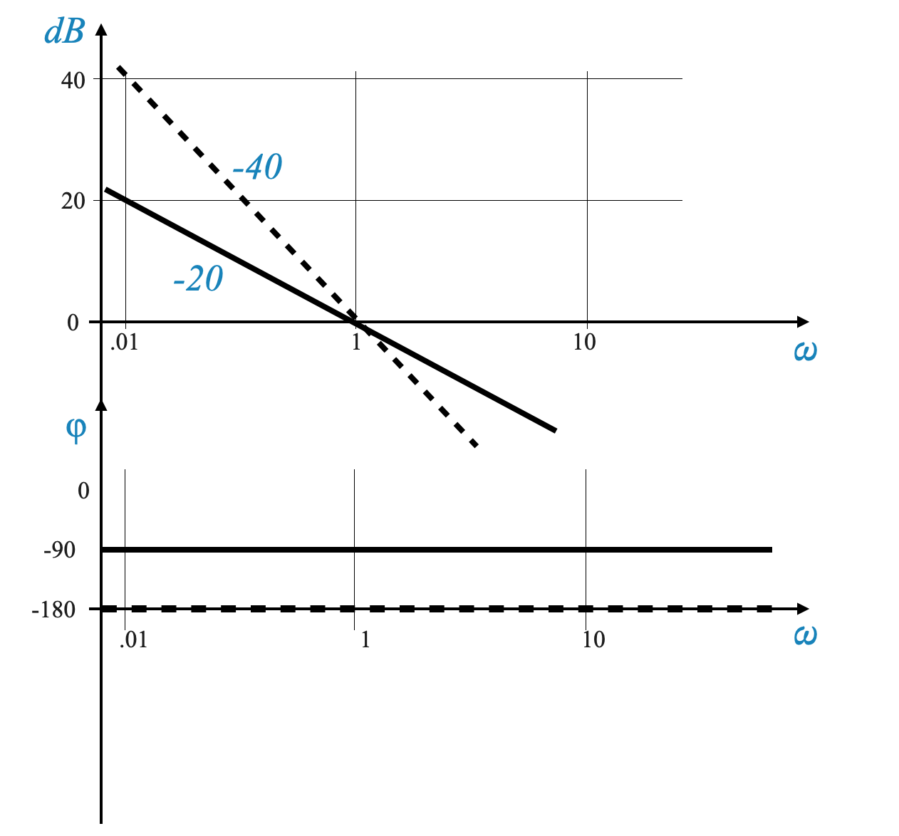
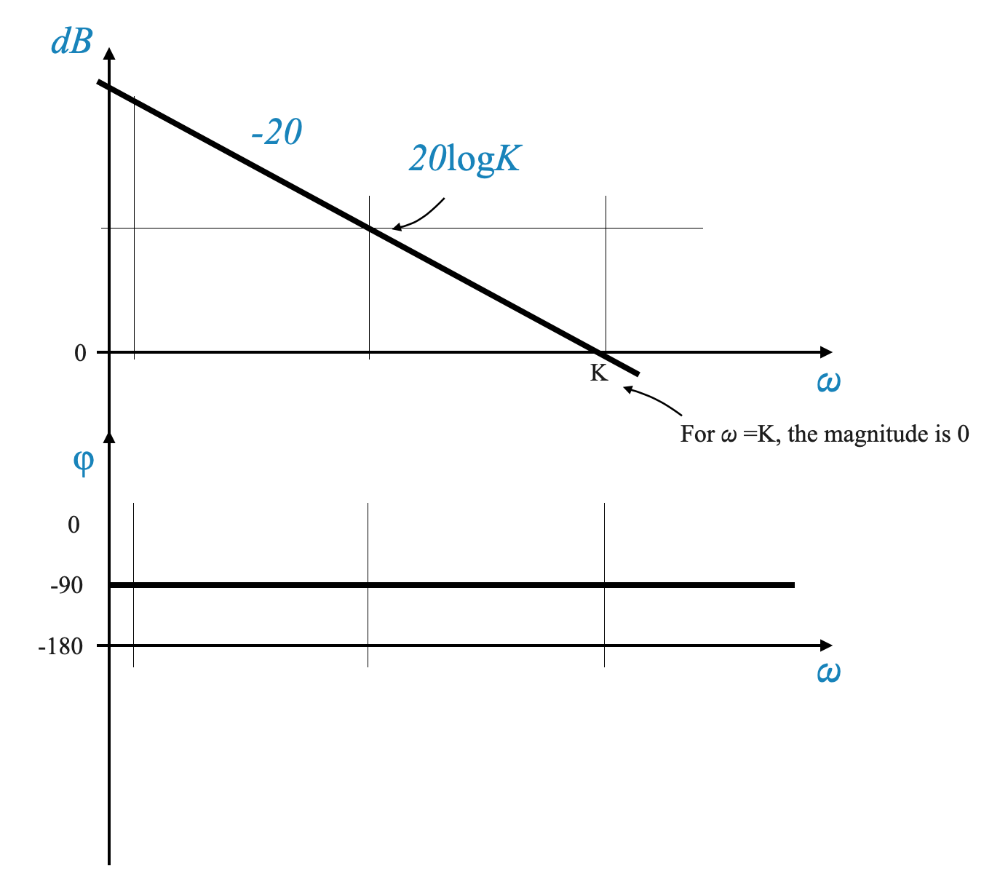
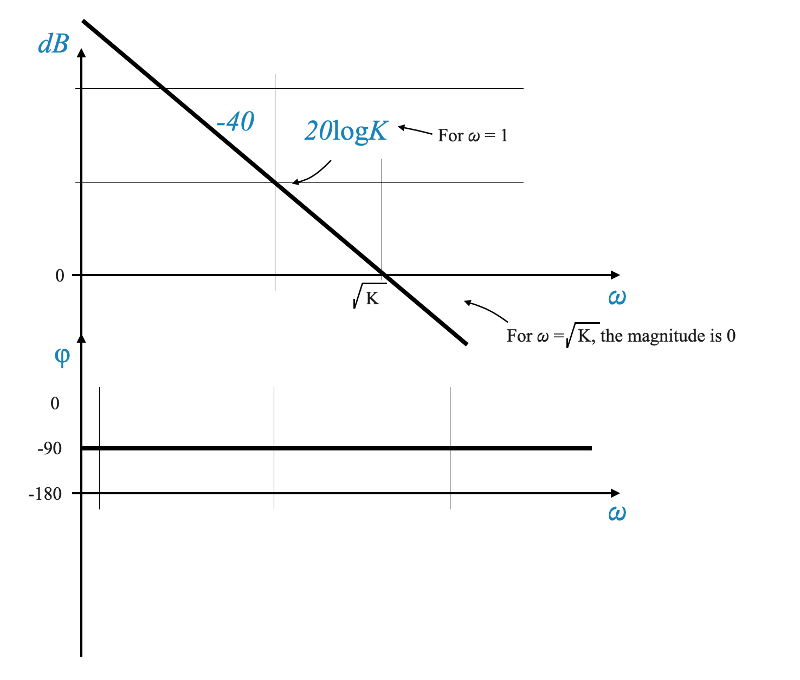
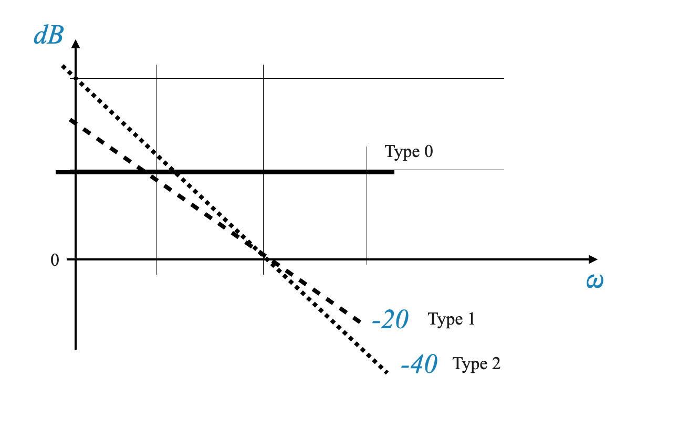
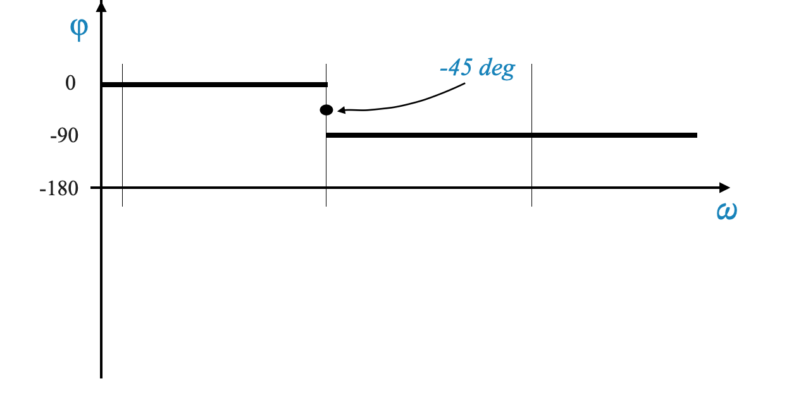
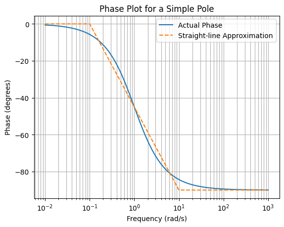
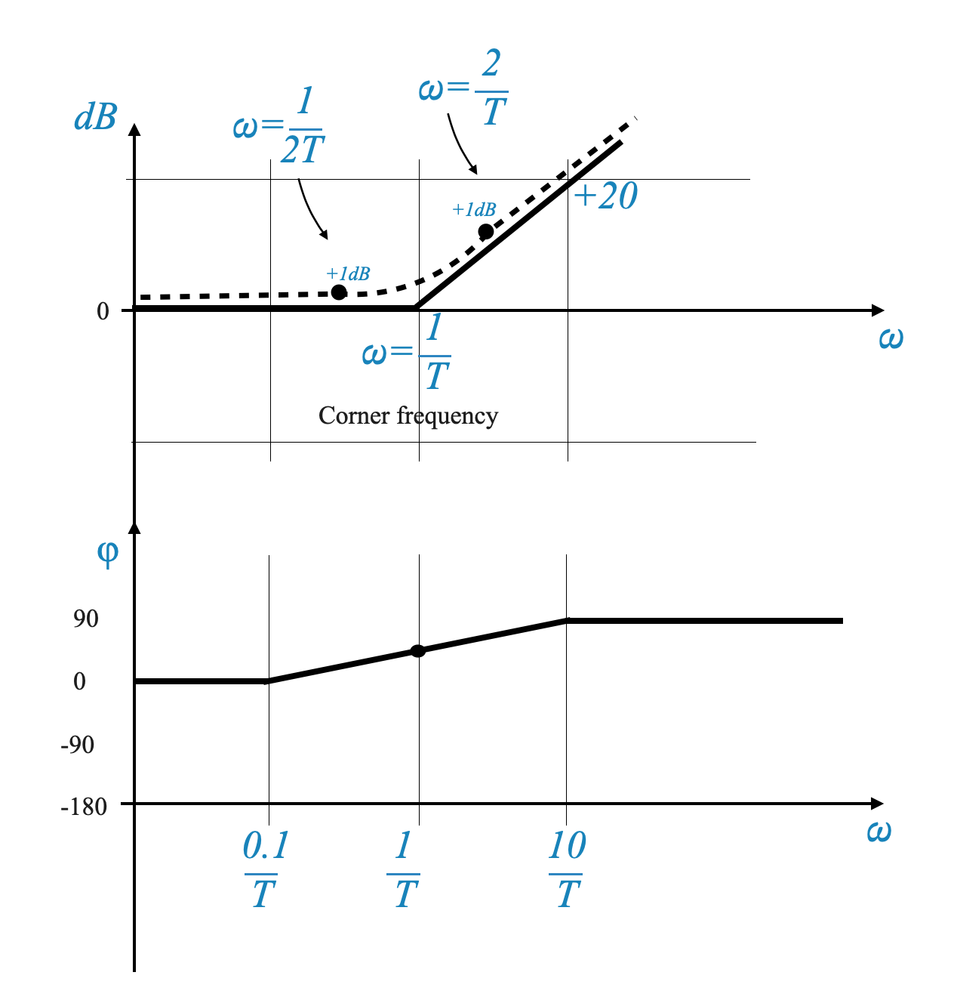

Under the framework of the Nyquist stability criterion, a significant aspect that needs attention is the application of Bode plots for analyzing gain margin, phase margin, and overall system stability.
The Nyquist Plot and Its Computational Intensity
The Nyquist plot, an essential tool in control theory, visualizes the frequency response of a system by plotting
\[ G(j\omega)H(j\omega) \]
which encompasses both the magnitude and phase angle of the transfer function over a range of frequencies.
Constructing a Nyquist plot requires the calculation of these components for a continuum of frequencies, typically from 0 to infinity. This process, as you might imagine, involves extensive computational efforts.
Bode’s Simplification Method
To alleviate the computational burden associated with Nyquist plots, Hendrik W. Bode introduced a more efficient method. Bode’s approach simplifies the display of frequency response data by transforming the complex plots into straightforward asymptotic lines. This transformation is achieved through logarithmic scaling of the magnitude and phase of the transfer function.
This semplification makes it possible to do the Fequency Design on the Bode’s Plots and not on the Nyquist Plos.
The Essence of Bode Plot Analysis
Let’s take a generic form for a Transfer Function:
This approach breaks down the transfer function into simpler additive components.
Logarithmic Representation: By taking the logarithm of the transfer function’s components, the multiplicative terms in $ G(j)H(j) $ become additive. This facilitates the creation of Bode plots with minimal calculations.
Logarithmic Scale and Straight Lines: Bode’s method employs logarithmic scales on both axes of the plot. This choice results in individual components of the transfer function, when plotted, appearing as (almost) straight lines. The addition of these linear segments provides a clear and comprehensive visualization of the system’s frequency response.
In Bode plots, the frequency axis is represented on a logarithmic scale, which is essential for analyzing control systems. On such a scale, the notion of ‘zero frequency’ is undefined, and thus, frequencies typically range from a low (but non-zero) value to a high value. This characteristic of the Bode plot offers a significant advantage for control system analysis.
Control systems often function as low-pass filters, meaning they are primarily concerned with signals in the low-frequency range. However, it’s equally important to consider the impact of high-frequency noise. The logarithmic nature of the Bode plot’s frequency axis allows for an effective representation of both these aspects.
In a linear frequency scale, such as that used in Nyquist plots, accommodating a wide range of frequencies can lead to a compressed representation of the low-frequency range, where the performance characteristics of a system are most relevant. Conversely, the high-frequency range, which is crucial for understanding disturbance rejection, might not be adequately represented due to space limitations on the graph.
The logarithmic scale used in Bode plots elegantly addresses these issues. It elongates the low-frequency region, allowing for a more detailed analysis of the system’s behavior in this crucial range. Simultaneously, it also accommodates the high-frequency range effectively. This dual capability enables a comprehensive view of the system’s performance across a wide frequency spectrum, which is particularly beneficial for the analysis and design of control systems.
Magnitude and Phase Calculations
Magnitude: Consider the logarithm of the magnitude of each term.
Unit of Magnitude: In control systems, the magnitude of a transfer function is often expressed in decibels (dB). The formula for converting a unit-less magnitude $ M $ to decibels is $ 20 _{10}(M) $.
Rationale for Using Decibels: The decibel unit, originating from communication engineering, provides a standardized and practical scale for magnitude representation. Although one could argue for using the natural logarithm or a simple logarithmic scale, the decibel unit’s ubiquity and compatibility with Bode’s method make it the preferred choice.
–
Definition: A logarithmic unit used to express the magnitude of a frequency response.
Formula:\(20 \log{10}M\) dB, where M is the magnitude.
Significance: Provides a standardized scale for comparing magnitudes in control systems.
– END OF SIDEBAR
The Structure of Bode Plots
Bode plots consist of two separate plots: 1. Magnitude Plot: This plot has frequency (\(\omega\)) on the x-axis and magnitude in decibels on the y-axis. The magnitude plot shows how the gain of the system changes with frequency. 2. Phase Plot: This plot also has frequency (\(\omega\)) on the x-axis, but the phase angle (\(\phi\)) on the y-axis. It demonstrates how the phase of the system changes with frequency.

The Significance of Logarithmic Scaling
Using a logarithmic scale for the frequency axis (\(\log \omega\)) is crucial because it converts the complex frequency response of each term into straight lines, as opposed to curved lines that would be seen on a linear scale. This transformation significantly simplifies the analysis.
If we did not have \(\log \omega\) Bode’s plot would not be as convenient.
Linear and Logarithmic Scales in Bode Plots
Magnitude Axis: The magnitude axis in a Bode plot is linear, as the logarithmic operation is already incorporated in the decibel calculation.
Frequency Axis: The frequency axis is logarithmic, which simplifies the representation of the frequency response.
Building Blocks of Bode Plots
To construct a Bode plot, we consider the following building blocks of a transfer function:
Constant gain factor $ K $.
Zero or Pole at the origin $ (j)^{N} $.
First-order-like factors $ (1 jT)^{m} $;
Second-order-like factors $ ( s^2 + s + 1)^{r} $.
Time delay factor $ e^{-j_D} $.
Other factors representing zeros and poles in both the left and right half of the s-plane.
Note that we have taken the Time Constant Form of the factors.
Note also that case 3), includes:
$ (1 - jT) $ (RHP zero) and $ $ (RHP pole)
These elements are combined to form the complete Bode plot, with each factor contributing linearly to the overall response.
Bode Plot
The Bode plot consists of two graphs:
Magnitude Plot: This plot has the frequency on a logarithmic scale (x-axis) and the magnitude of the system response in decibels (y-axis).
Phase Plot: This plot also has the frequency on a logarithmic scale (x-axis), but the y-axis represents the phase angle in degrees.
Frequency Range in Bode Plots
Frequency Spectrum: Bode plots cover a wide range of frequencies, from very low (approaching zero) to very high frequencies.
Significance: This broad range allows for comprehensive analysis of system dynamics under various conditions.
This was not the case with Nyquist where the low frequency range was compressed to allow plotting up to infinity.
Basic Building Blocks of Bode Plots
Bode plots are constructed by analyzing the basic building blocks of a transfer function and then combining them. Let’s start with the simplest building block.
Building Block 1: Gain $ K $
The gain $ K $ in a transfer function can be represented in a Bode plot as:
Magnitude: $ 20 (K) $ dB. This value is constant across all frequencies.
Phase: $ 0^$, as the gain doesn’t affect the phase.
Graphically, on a semi-log paper, the magnitude plot is a horizontal line at $ 20 (K) $ dB, while the phase plot remains at $ 0^$.
Considerations for Gain $ K $
If $ K > 1 $, the magnitude line is above the 0 dB axis.
If $ K < 1 $, the magnitude line is below the 0 dB axis.

Building Block 2: Zero or Pole at the origin $ (j)^{N} $
We start evaluating how $ $ affects the Bode plot and then we generalise it:
Magnitude: $ -20 () $ dB.
Phase: $ -90^$ for all frequencies.
Magnitude Analysis
The magnitude plot is a straight line with a slope of $ -20 $ dB/decade. This slope is determined by the fact that a change in frequency by a factor of 10 (a decade) results in a $ -20 $ dB change in magnitude.
Note that if you took the Magnitude with respect to \(\omega\) it would be a non-linear function (there is the log).
Decade and dB per Decade
Decade: A decade refers to a tenfold increase in frequency. For example, moving from 1 Hz to 10 Hz is one decade.
dB per Decade: This term describes how the magnitude (in decibels) changes over a decade. A line with a slope of “-20 dB per decade” implies a decrease of 20 dB with every tenfold increase in frequency.
Plotting dB per Decade
Constructing the Slope: To illustrate a slope of -20 dB per decade, select a reference frequency and decrease the magnitude by 20 dB for the next decade.
Example: If starting at 0.1 Hz, draw a straight line decreasing by -20 dB at 1 Hz, representing -20 dB per decade.
Example: Plot for One Pole at the Origin
Consider a frequency range from $ 0.1 $ to $ 10 $ rad/s. On a semi-log graph: - At $ = 0.1 $ rad/s, the magnitude is $ -20 (0.1) = 20 $ dB. - At $ = 1 $ rad/s, the magnitude is $ -20 (1) = 0 $ dB. - At $ = 10 $ rad/s, the magnitude is $ -20 (10) = -20 $ dB. - Connect these points to form a straight line, representing the magnitude plot.

We can now generalise and consider $ $:
Magnitude: $ -40 () $ dB (i.e., straight line with slope of $ -40 $ dB/decade.
Phase: $ -180^$ for all frequencies.

Magnitude Change: For each additional lag term, the slope of the magnitude plot doubles. For \(1/j\omega^2\), the slope is -40 dB per decade.
Plotting: Begin at \(\omega\) = 1 with a specific dB level and extend the line with a slope of -40 dB per decade.
And if we have a zero (or multiple zeros at the origin) the shape is the same but the slope becomes positive.
Combination of Gain and Pole at the Origin \(\left( \frac{K}{s} \right)\)
\[
G(s) = \frac{K}{s}
\]
The Bode Plot is obtained summing up the plot for \(K\) and the plot for \(\frac{1}{s}\).
Combined Effects: When combining a gain factor (\(K\)) with a term (\(1/j\omega\)), the magnitude plot shifts. The phase is -90.
Magnitude Equation: For \(G(j\omega) = \frac{K}{j\omega}\), the magnitude in dB is \(-20 log(\omega) + 20 log(K)\).
This is a straight line of the form: \(y = mx + c\).

Two poles at the origin:
\[
G(s) = \frac{K}{s^2}
\]
The Magnitude equation is \(dB = -40 log(\omega) + 20 log(K)\).

Identifying the Type of System from Bode Plot
In the low frequency region, the Bode Plot will tell you the type of your system:
Type-0 System: Characterized by a horizontal line in the low-frequency region, indicating a constant gain.
Type-1 System: Exhibits a line with a slope of -20 dB per decade, indicative of a first-order system.
Type-2 System: A slope of -40 dB per decade in the low-frequency region signals a second-order system.

Building Block: First-Order Lag with Time Constant
Simple Pole or Simple Lag (1/(1 + jωT))
Magnitude and Phase:
For \(G(s) = \frac{1}{1 + j\omega T}\), the Magnitude can be expressed as:
Frequency Ranges: We divide the frequency spectrum into two ranges based on the product \(\omega T\): - Case 1: \(\omega T << 1\) (Low-frequency range): In this range, the term \(\omega^2T^2\) is negligible, simplifying the equation to \(dB ≈ 0\). Thus, the plot remains at 0 dB for low frequencies.
Case 2: \(\omega T >> 1\) (High-frequency range): Here, the \(1\) in the equation becomes negligible, simplifying it to \(dB = -20 log(\omega T)\). This results in a straight line with a slope of -20 dB per decade.
Corner Frequency and Transition
Corner Frequency: The frequency at which \(\omega T = 1\) is known as the corner frequency. It represents a critical transition point in the plot.
Magnitude Plot: The plot transitions from a flat line (0 dB) at low frequencies to a line with a slope of -20 dB per decade beyond the corner frequency.
Case 3: At \(\omega T = 1\): The magnitude equation becomes \(dB = -10 log \sqrt{2} = -3\) dB. In this case, the phase is \(tan^{-1}\left(1\right) = -45^\circ\)
We can verify the difference between the real function and the approximation.
import numpy as npimport matplotlib.pyplot as plt# ConstantsT =1# You can change T as per your requirementscorner_frequency =1/ T# Frequency range from 0.1 to 100omega = np.logspace(-1, 2, 500) # 500 points between 10^-1 and 10^2# Calculating dB values for the actual plotdB_actual =-10* np.log10(1+ omega**2* T**2)# Asymptotic approximationdB_asymptotic = np.zeros_like(omega)for i, w inenumerate(omega):if w < corner_frequency: dB_asymptotic[i] =0else: dB_asymptotic[i] =-10* np.log10(w**2* T**2) # Slope of -20 dB/decade# Plotting the Bode plot and its asymptotic approximationplt.figure()plt.semilogx(omega, dB_actual, label='Actual Plot')plt.semilogx(omega, dB_asymptotic, label='Asymptotic Approximation', linestyle='--')plt.title('Bode Plot with Asymptotic Approximation')plt.xlabel('Frequency (rad/s)')plt.ylabel('Magnitude (dB)')plt.grid(which='both', axis='both')plt.legend()plt.show()
In Bode plot analysis, the use of asymptotic approximations simplifies the plotting process. However, this approach can introduce errors, especially near the corner frequencies. To enhance the accuracy of the plot, we can add more points and calculate the errors at these points.
Error Calculations: Errors in the Bode plot are algebraically added at specific frequencies to create a more accurate representation. For instance, at the corner frequency, the typical error might be -3 dB. Additionally, we can calculate errors at points one octave above and below the corner frequency. An octave in this context refers to a doubling or halving of the frequency.
For a more accurate representation, we can take additional points at frequencies \(\omega = \frac{1}{2T}\) and \(\omega = \frac{2}{T}\). The errors at these points can be calculated as follows:
These error calculations help refine the Bode plot, making it a closer match to the actual frequency response of the system.
Common practice includes adjusting the plot at ω = 1/(2T) and ω = 2/T by a certain dB level to closely match the actual plot.
Phase Plot Analysis
The primary equation for the phase plot in Bode analysis is given by:
\[
\angle G(j\omega) = -\tan^{-1}(\omega T)
\]
This equation implies:
At \(\omega = 0\), \(\angle G(j\omega) = 0^\circ\), indicating the phase starts at 0 degrees at low frequencies.
As \(\omega \rightarrow \infty\), \(\angle G(j\omega) \rightarrow -90^\circ\), showing the phase approaches -90 degrees at high frequencies.
At the specific frequency \(\omega = \frac{1}{T}\), \(\angle G(j\omega) = -45^\circ\), which is the midpoint in the phase transition.

Construction of the Phase Plot
Actual Phase Plot: The actual phase plot for a simple pole smoothly transitions from 0 degrees at low frequencies to -90 degrees at high frequencies. While certain frequency ranges might allow for constant phase approximations, the true plot exhibits a gradual, continuous change.
Approximation Method: A practical approximation for the phase plot uses a straight line extending from \(\omega = \frac{1}{10T}\) to \(\omega = \frac{10}{T}\). This approximation simplifies the plot but can introduce an error of up to approximately \(6^\circ\). Such an error becomes significant when calculating the phase margin, where precision is crucial for assessing system stability.
Visualization
The phase plots, both approximated and actual, can be visualized as shown below. The figures illustrate the distinction between the actual phase behavior and its asymptotic approximation, highlighting the simplicity and potential errors involved in the latter approach.
Asymptotic Approximation: (Image showing the straight-line approximation from \(\frac{1}{10T}\) to \(\frac{10}{T}\))
Figure: The asymptotic approximation is depicted using a straight line for ease of analysis.
Actual Phase Plot:
Figure: Image representing the smooth transition from 0 to -90 degrees. This is shown using the Python Script Below.
import numpy as npimport matplotlib.pyplot as plt# ConstantsT =1# Time constant, you can change this as needed# Frequency range from 0.01 to 1000omega = np.logspace(-2, 3, 500) # 500 points between 10^-2 and 10^3# Calculating the actual phasephase_actual =-np.arctan(omega * T) * (180/ np.pi) # Convert to degrees# Straight-line approximationphase_approx = np.zeros_like(omega)for i, w inenumerate(omega):if w <1/ (10* T): phase_approx[i] =0elif w >10/ T: phase_approx[i] =-90else:# Linear interpolation between -45 at 1/T and -90 at 10/T phase_approx[i] = np.interp(np.log10(w), [np.log10(1/ (10* T)), np.log10(10/ T)], [0, -90])# Plotting the phase plotsplt.figure()plt.semilogx(omega, phase_actual, label='Actual Phase')plt.semilogx(omega, phase_approx, label='Straight-line Approximation', linestyle='--')plt.title('Phase Plot for a Simple Pole')plt.xlabel('Frequency (rad/s)')plt.ylabel('Phase (degrees)')plt.grid(which='both', axis='both')plt.legend()plt.show()

Summary - Simple Pole or Simple Lag (1/(1 + jωT))
\[G(s) = \frac{1}{1 + j\omega T}\]
Simple Zero (1 + jωT)
\[
G(s) = 1+j\omega T
\]
Asymptotic Plot: For a zero, the asymptotic Bode plot starts with an increasing slope of +20 dB per decade at the corner frequency (1/T).
Adjusting for Accuracy: To create a more accurate plot, adjust the asymptotic plot at specific frequencies (such as ω = 1/(2T) and ω = 2/T) by adding dB levels.

Bode Plot for a Double Pole (1/(1 + jωT)²)
\[
G(s) = \frac{1}{(1+j\omega T)^2}
\]
Slope of the Line: For a double pole, the line in the Bode plot has a slope of -40 dB per decade, with adjustments for errors around this frequency.
Corner Frequency: The corner frequency, where ωT = 1, is the point where the slope change occurs.
Error Analysis in Bode Plots
Error Calculations: Errors in the Bode plot are algebraically added at specific frequencies to create a more accurate representation. For example, at the corner frequency, the error is -6 dB, with additional errors of -2 dB one octave above and below the corner frequency.
Second-Order Factors
\[
G(s) = \frac{1}{\frac{1}{\omega_n^2}s^2 + \frac{2\zeta}{\omega_n} s + 1}
\]
Phase Margin and Gain Margin in Bode Plots
Gain Crossover Frequency: This is the frequency at which the magnitude of the system’s response equals 1 (or 0 dB). It is crucial for stability analysis.
Phase Margin: The phase margin is the additional phase shift required to bring the system to the brink of instability. It is calculated from the phase plot at the gain crossover frequency.
Phase Margin Analysis:
The phase margin represents the additional phase angle that can be added to the system before it reaches a phase angle of -180 degrees.
Positive Phase Margin: If the plot is above the -180-degree line at the gain crossover frequency, the phase margin is positive, indicating a stable system.
Negative Phase Margin: Conversely, if the plot is below the -180-degree line, it’s a negative phase margin, suggesting potential instability.
Defining Phase Crossover Frequency: The phase crossover frequency is where the phase angle of the system’s response becomes -180 degrees. This frequency is critical in determining the stability of the system.
Gain Margin Analysis
Calculating Gain Margin: Gain margin is the additional gain that can be added to the system before it becomes unstable. It is measured in decibels (dB).
Determining Gain Margin: To find the gain margin, locate the phase crossover frequency on the magnitude plot. The distance (in dB) from this point to the 0 dB line represents the gain margin.
Constructing Bode Plots for Specific Transfer Functions
Example:
\[
G(s) = \frac{k}{s(1 + sT_1)(1 + sT_2)}
\]
Magnitude Plot Construction: Start by plotting the low-frequency plot for K = 10. Then, add plots for each factor (1/s, 1 + sT1, 1 + sT2) and adjust the slope at each corner frequency.
Approach: At each corner frequency, add or subtract dB levels based on the net change in slope. For example, at a corner frequency where the slope decreases, subtract dB levels to correct the plot.
Check your understanding
Pop-up Question: Why are Bode plots preferred over Nyquist plots for certain analyses in automatic control?
Answer: Bode plots simplify the visualization and interpretation of a system’s frequency response by converting complex polar plots into straightforward logarithmic plots. This simplification is especially useful for understanding the system’s gain and phase margins.
Pop-Up Question: Why are decibels used in Bode plot analysis?
Answer: Decibels provide a logarithmic scale that simplifies the comparison of different magnitudes, making it easier to analyze and design control systems.
Pop-Up Question: What does a positive gain margin indicate about a system’s stability?
Answer: A positive gain margin indicates that a system can withstand an increase in gain without becoming unstable.
Pop-up Question: Why are Decades Used in Bode Plots?
Answer: Decades are used because they provide a logarithmic scale for frequency. This allows a wide range of frequencies to be represented compactly, facilitating the analysis of system behavior across different frequency bands.
Pop-up Question: Why is the Corner Frequency Important in Bode Plots?
Answer: The corner frequency marks the transition point where the behavior of the system changes significantly. It is where the approximation of the system’s frequency response shifts from one regime to another, such as from a flat response to a sloped one.
Pop-up Question: What is the Significance of the Gain and Phase Margins in Control Systems?
Answer: Gain and phase margins are critical indicators of system stability. A positive phase margin and a substantial gain margin imply that the system can tolerate a certain level of gain increase or phase shift before becoming unstable.